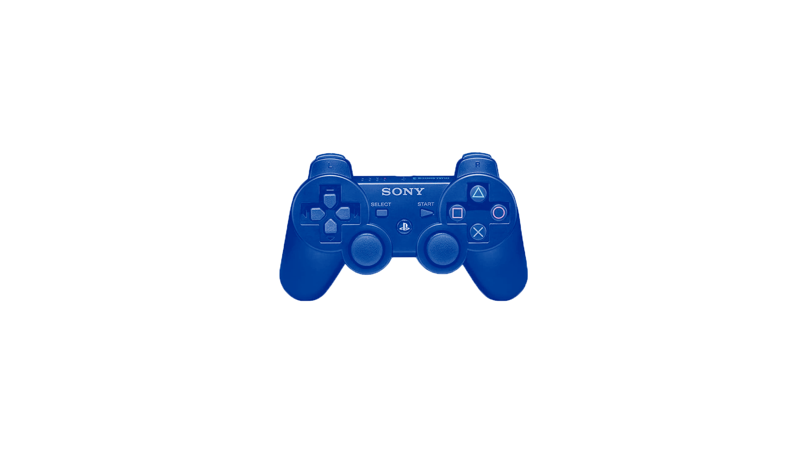
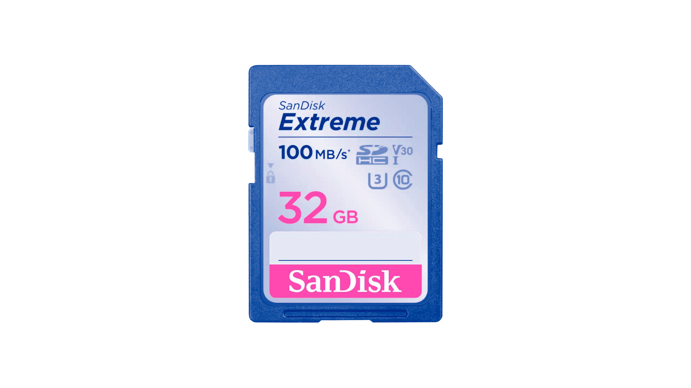
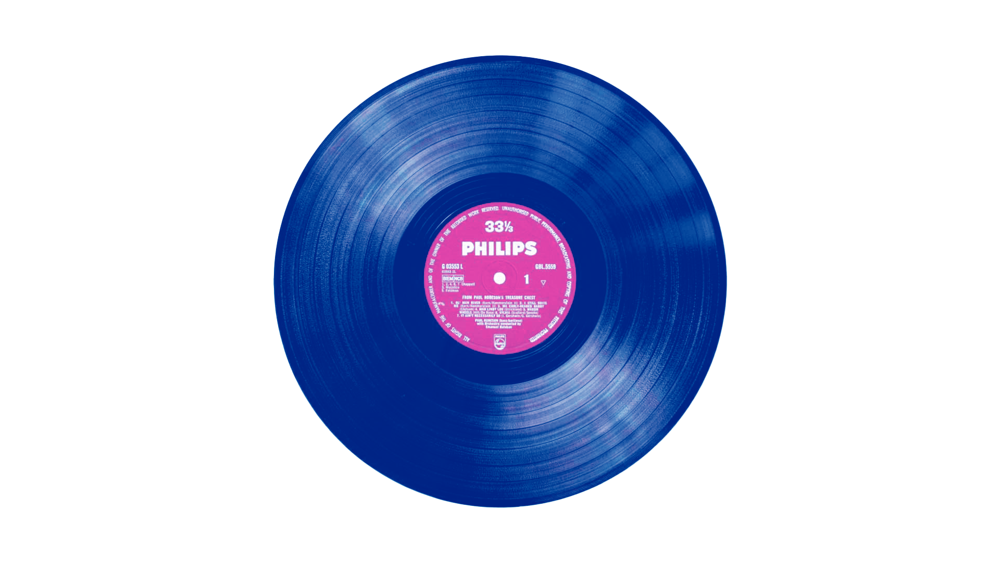

Physical Media has been around for literal centuries, from the humble beginnings of the phonograph in the 1800s to the highly digitized and portable CD in the 1970s. It has become an important development in how we perceive audio and visuals in our daily lives, as all our current technological advancements were refined from their predecessors. By archiving this information and preserving physical copies, we protect important pieces of audio-visual history.

Physical Media is now making a comeback in our present day (2026), and it is no surprise. People feel nostalgic for older media, while also wanting to own and have physical media. You can see this especially in the rise of audio media, such as the CD and Vinyl Record, as Spotify cannot replicate the feeling of having the music in your literal hands. Moreover, people want to disconnect from our already highly digitized world by going back to these memories and preserving them. LONG LIVE PHYSICAL MEDIA!!

